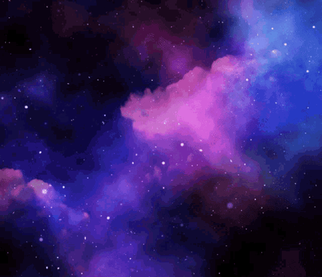

A Star is Born
The undetermined journey
Inside a galaxy there are
vast areas of dust and gas,tens of light-years in diameter,
The formation called Stellar Nebulah

According to Newton's theory of universal gravitation the denser areas of these nebulae tend to
become even denser in a way that resembles an avalanche.
The more matter they gather around them, the bigger mass they get and the bigger mass they get,
the more they attract matter around them.
This gravitational collapse of a nebula forces matter to very high pressure, speed and
temperature.
Thus, in an extremely dense area, a protostar is formed.